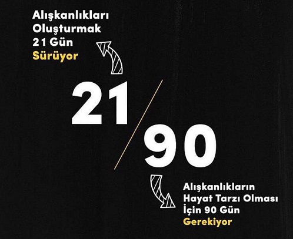

Bir alışkanlık edinmek ve bunu yaşam tarzına dönüştürebilmek için bilinçaltınızı ikna etmek için geçerli sürelerdir.
Hepimiz iş dünyasında, hobilerimizde veya kişisel yaşantımızda iyi alışkanlıklar edinmek isteriz. Alışkanlık edinmenin en popüler yöntemlerinden birisi 21/90 kuralı. Kural oldukça basit.
21 gün boyunca kişisel veya profesyonel bir hedefe odaklanmak. Üç hafta sonunda, bu amacın peşinde koşmak bir alışkanlık haline gelir. Bu alışkanlığı edindiğinizde, bunu doksan gün daha yapmaya devam ederseniz yani üç hafta ve doksan gün boyunca devam etmeyi başarabilirseniz, o zaman kalıcı bir yaşam tarzı değişikliği haline gelmektedir.
Bildiğiniz üzere bir şeye, bir duruma alışmak, alışkanlık kazanmak zihnimizde 20 günde meydana gelen bir durumdur.Alışkanlık haline getirmek istediğimiz bir hedefi 20 gün boyunca yaptığınızda 21. günde alışkanlık kazanmış oluruz. Eskiler bu duruma “meleke” derler yani tekrarlama sonucu kazanılan alışkanlık.
Kötü alışkanlıkları yok etmek, yeni bir alışkanlık edinmekten daha zordur. Yeni bir alışkanlığı yerleştirmek için 21 gün boyunca hiç ara vermeden tekrar gerekir. Çünkü yeni alışkanlığın zihinde ve hücresel bellekte kalıcı olarak yerleşmesi 21 gün sürer. Alışkanlıklar tekrarlana tekrarlana kazanılır. Yeni alışkanlığın da zihinde kalıcı sinir ağı “otoyolu” yaratması 21 gün tekrar edilerek oluşur. Zihnimiz ve kaslarımız tekrar edilen bir şeyi otomatiğe bağlar. Dişinizi fırçalamak, yürümek ya da ayakkabınızı bağlamak için düşünmüyorsunuz değil mi?
Bireysel gelişim yolculuğumuzda bilinçaltımıza belirli bir olgunlaşma süresi tanımamız gerekir; bunu kuluçka dönemi olarak düşünebiliriz. Unutmamamız gereken, bu 21 günlük kuluçka dönemini hiç sekteye uğratmadan tamamlamamız gerektiğidir. Şimdi 21/90 kuralının ne olduğunu belirledik, peki bunu ne için kullanmak gerekiyor? Nerede olursak olalım, her gün yapılabilecek özel bir şey olması gerekiyor. 21/90 kuralı ile takip edilmesi gereken bazı potansiyel hedefler.
Birçoğumuzun yaşadığı zorluklardan biri pozitif kalmak. Ancak, odaklanmanın bir yolu var. Her gün kayda değer olumlu bir şey bulun ve yazın. 21 gün boyunca iyi bir şey yazın. Bazen tekrarlayabilirsiniz, ancak değişik ve güncel bir şeye odaklanmak daha iyidir. Bunu yaptıktan sonra, üç ay boyunca devam edin.
Günde birden fazla şey yazabilirsiniz, ancak en azından bir tanesine ihtiyacınız olduğunu unutmayın. Hayat muhtemelen çok daha güzel ve pozitif görünmeye başlayacak. Olumsuz şeylerin sizi eskisi gibi aşağı sürüklemeyeceğini göreceksiniz. Yaşamınızda, en çok yardıma ihtiyacınız olan üç şey bulun. Bir seferde birine odaklanın. İlişkinizde, stres düzeyinizde, maddi durumunuzda veya sağlığınızla ilgilenip ilgilenmediklerinde, hayatınızda en çok çalışmayı gerektiren üç şey bulun. Önce sizin için en önemli olana odaklanın. Her gün biraz çalışın. Her zaman sizi bu amaca yöneltmek için bir şeyler yapın. Üç hafta ve doksan günün sonunda, herbiri için aynı işlemi tekrarlayabilirsiniz. Yorulmadan, bıkmadan kendinizi ilerleme kaydederken bulacaksınız.
Hepimizin bir kaçışa ihtiyacı var, ancak diğer çabalarımızdan ve sorumluluklarımızdan uzaklaşmayacak kadar kısa ve tatlı olması gerekiyor. Bu yüzden, her gün yalnızca beş dakika veya belki de on dakika alan bir şey bulmaya çalışın, ancak bu her gün için dört gözle bekleyebileceğiniz bir şey olmalı.
Beş ya da on dakikalık kaçışınız güzel bir bahçede dolaşmak olabilir. Hiç kimsenin görmediği bir defterde karalamalar veya ufak notlar tutmak olabilir. Her zaman söylenecek doğru şeyi olan bir dostunuz, arkadaşınızla küçük sohbetler olabilir. Bu amaç için neredeyse sonsuz bir olasılık listesi var.